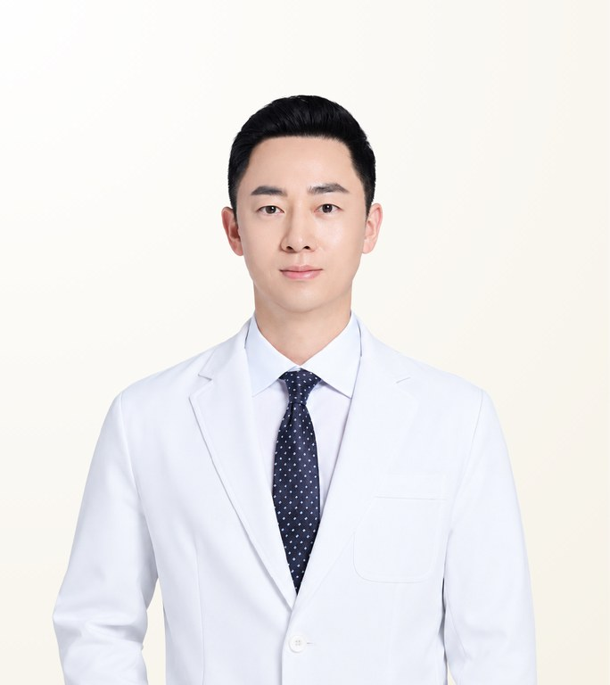

STMSTYLE 확인 의료진
양해원
Yang Hae-Won · ยัง แฮวอน
아이니크성형외과 · 성형외과 전문의
- 고난도 눈재수술
- 눈밑지방재배치
- 절개 쌍꺼풀 및 눈매교정
- 경력
- 성형외과 경력 17년 이상
- 임상 경험
- 15,000건 이상
- 권장 체류 일정
- 권장 한국 체류 기간: 약 7일
원장 소개
양해원 원장은 서울 강남 아이니크성형외과의 성형외과 전문의로, 고난도 눈재수술, 눈밑지방재배치, 얇은 피부층 나노지방이식으로 알려져 있습니다. 삼성의료원에서 성형외과 수련을 받았으며, 17년 이상의 경력과 15,000건 이상의 케이스를 보유하고 있습니다. 자연스러운 결과와 붓기·회복 부담을 줄이기 위한 세밀한 출혈 관리에 집중합니다.
Case Expertise
고난도 눈재수술
높게 잡힌 '소시지' 라인을 포함해 이전 수술로 생긴 라인 문제, 유착, 비대칭을 교정합니다. 여러 차례 수술로 조직이 얇아졌거나 유착이 심한 경우에도 조직의 회복 상태를 먼저 평가한 뒤 재수술 범위를 결정합니다.
눈밑지방재배치
튀어나온 눈밑 지방을 제거하는 대신 꺼진 부위로 옮겨 그늘과 요철을 함께 개선합니다. 피부 상태에 따라 결막 또는 절개 방식을 선택하며, 피부가 얇은 경우 나노지방이식을 병행합니다.
절개 쌍꺼풀 및 눈매교정
눈 뜨는 근육을 조절하면서 쌍꺼풀 라인을 만들어 또렷함과 자연스러움의 균형을 맞춥니다. 붓기와 회복 부담을 줄이기 위해 출혈을 세심하게 관리합니다.
그 외 진료 가능
사용 재료 · 장비
영상
진료 철학
앞선 기술을 활용하되 결과는 자연스러워야 한다는 원칙 아래, 고난도 눈재수술과 눈밑수술에서도 작은 디테일까지 놓치지 않는 것을 중요하게 생각합니다. 눈수술 중 출혈이 많을수록 붓기와 회복 부담이 커질 수 있다는 점을 고려해 지혈·레이저 장비에 지속적으로 투자하고, 수술 과정에서 출혈을 세밀하게 관리합니다. 눈밑과 얇고 예민한 피부층에는 나노지방이식과 세포보강 방식을 활용해 요철을 줄이고 자연스럽게 연결합니다. 환자의 작은 불편도 다시 살피며, 필요한 경우 리터치까지 책임집니다.
— 양해원
동료 의료인 추천
양해원 원장은 가장 앞선 기술로 가장 자연스러운 아름다움을 만드는 의사입니다. 디테일까지 놓치지 않는 그의 안목을 추천합니다.
남재희 원장 · 피부과 전문의
실력뿐 아니라 인격적으로도 훌륭한 의사입니다. 환자를 끝까지 책임지는 모습이 존경스럽습니다.
최민석 원장 · 성형외과 전문의
STMSTYLE 평가
STMSTYLE은 양해원 원장과 오랜 기간 협업해 왔으며, 고난도 눈수술과 눈밑수술에 우선 추천하는 의사입니다. STMSTYLE이 직접 경험한 바에 따르면, 양해원 원장은 환자의 작은 불편도 다시 살피고 필요한 경우 리터치까지 책임지며, 출혈 관리 장비에 지속적으로 투자합니다. 이전 눈수술 후 재수술을 원하는 환자나, 조직 상태를 면밀히 평가해야 하는 눈밑 교정 환자에게 적합합니다.
STMSTYLE경력 및 학력
전체 경력 보기
학력
- 삼성의료원 성형외과 수련
- Royal Australasian College of Surgeons Advanced Facial Anatomy Course 이수
면허·자격
- 성형외과 전문의(삼성의료원 수련)
경력
- 아이니크성형외과 원장
- 홍진주 원장에게 15년 이상 눈·코 수술 트레이닝
학회 활동
- 성형외과 학술지 논문 게재
자주 묻는 질문
양해원 원장은 눈재수술을 잘하나요?
네. 양해원 원장은 과교정된 눈매교정, 비대칭, 높게 잡힌 '소시지' 라인 등 고난도 눈재수술을 전문으로 합니다. 이전 수술로 인한 유착과 조직 상태를 평가한 뒤 재수술 범위를 결정하며, 수술 적합 여부는 대면 상담에서 결정됩니다.
양해원 원장은 어떤 환자에게 잘 맞나요?
양해원 원장은 자연스럽고 부드러운 눈매를 원하는 환자, 이전 눈수술 후 재수술이 필요한 환자, 눈밑 지방이나 꺼짐이 있는 환자에게 잘 맞습니다. 조직 보존을 중시하며 출혈을 세밀하게 관리합니다.
양해원 원장에게 눈수술을 받으려면 한국에 얼마나 머물러야 하나요?
양해원 원장의 수술은 약 7일 체류를 권장합니다. 실제 기간은 수술 종류와 개인 상태에 따라 달라질 수 있으며, 상담 후 확정됩니다.
양해원 원장은 어떤 장비와 재료를 사용하나요?
양해원 원장은 붓기와 회복 부담을 줄이기 위해 루메니스 울트라펄스 레이저와 출혈 관리 전용 레이저 장비를 사용합니다. 또한 엔도타인, 모티바 가슴 보형물, 눈밑과 얇은 피부층을 위한 나노지방·세포보강 지방이식 시스템을 사용합니다.
양해원 원장이 직접 수술하나요? STMSTYLE을 통해 상담할 수 있나요?
네, 양해원 원장이 병원 원장으로서 직접 수술합니다. 방콕 STMSTYLE을 통해 LINE 또는 WhatsApp으로 상담을 시작하실 수 있으며, STMSTYLE이 병원과 일정 및 조건을 조율해 드립니다. 최종 치료 계획과 비용은 대면 상담 후 결정됩니다.
정보 출처
출처 및 확인 기록 보기
| 항목 | 출처 | 확인일 |
|---|---|---|
| 전문의 자격, 수련 이력 및 수료증 | 아이니크성형외과 제공 원본 서류(22건) | 2026-08-28 |
| 학술 논문 | Aesthetic Plastic Surgery, Archives of Plastic Surgery, Archives of Aesthetic Plastic Surgery 등 게재 논문 및 교과서(광대축소술·보완 지방이식 관련 연구 포함) | 2026-08-24 |
| 경력 연수 및 케이스 수 | 아이니크성형외과 공개 자료(공식 블로그) | 2026-08-28 |
| 상담 영상 | 원장 출연 공개 영상 | 2026-08-24 |
| 진료 방식, 환자 관리 및 동료 의사 추천 | 장기 협업과 환자 코디네이션을 통한 STMSTYLE 직접 확인 | 2026-08-28 |
확인 기록 · 2026-08-28
STMSTYLE은 장기 협업, 대면 미팅, 환자 코디네이션, 병원 제공 공식 서류와의 교차 확인을 통해 양해원 원장의 프로필을 확인했습니다.